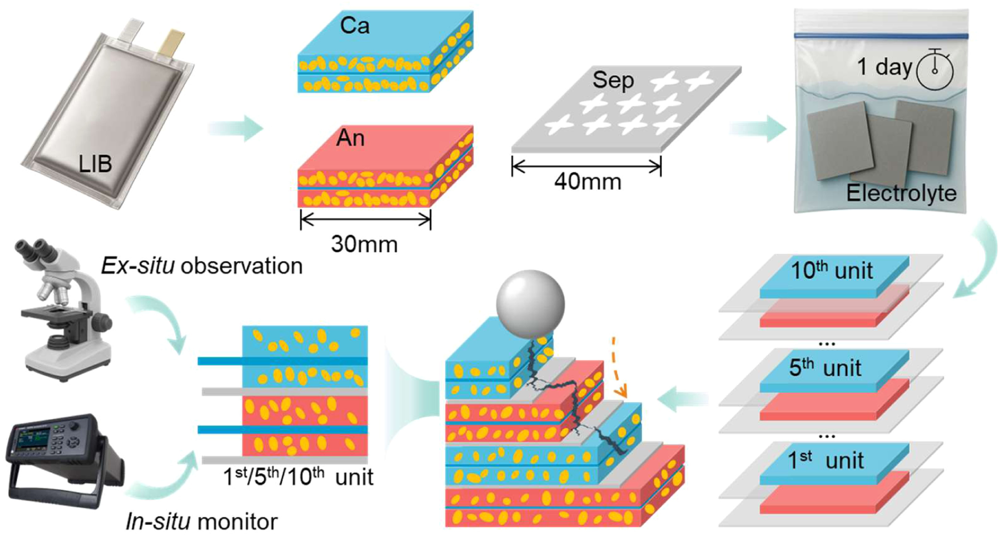
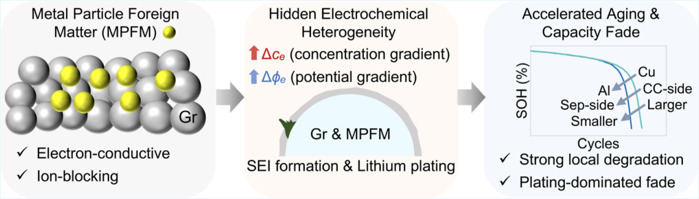
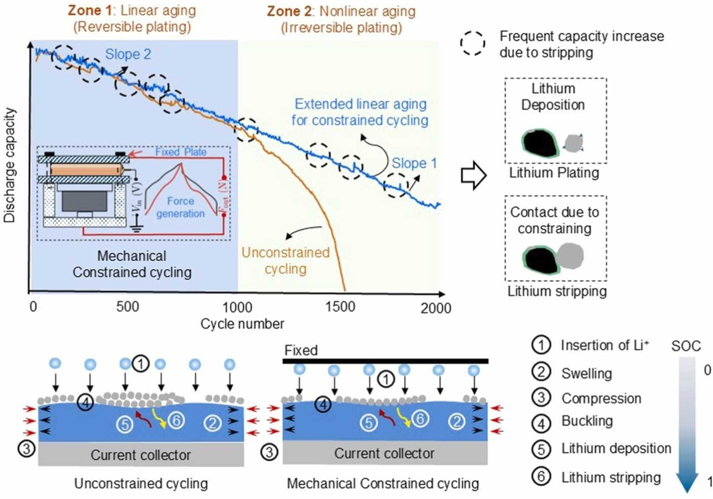
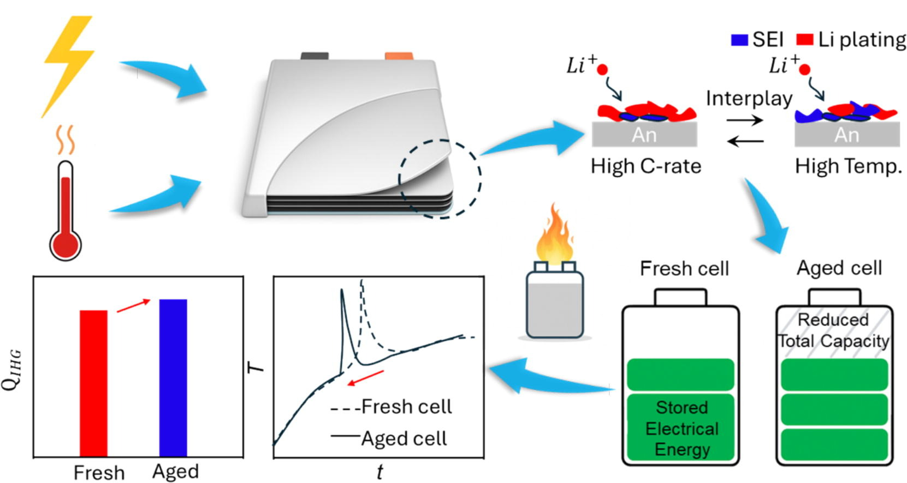
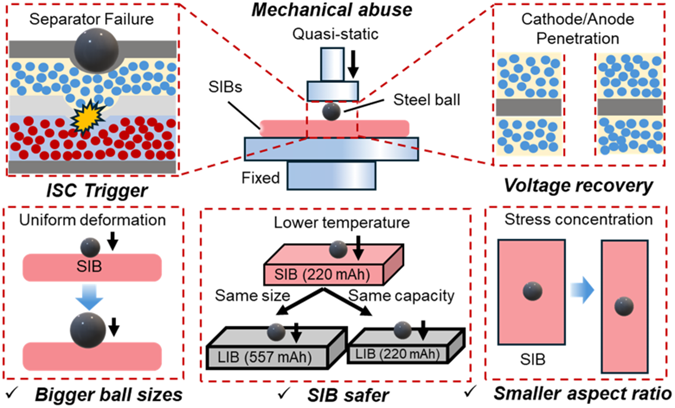
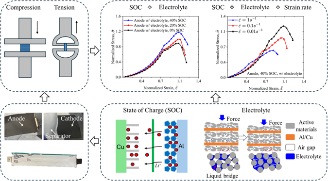
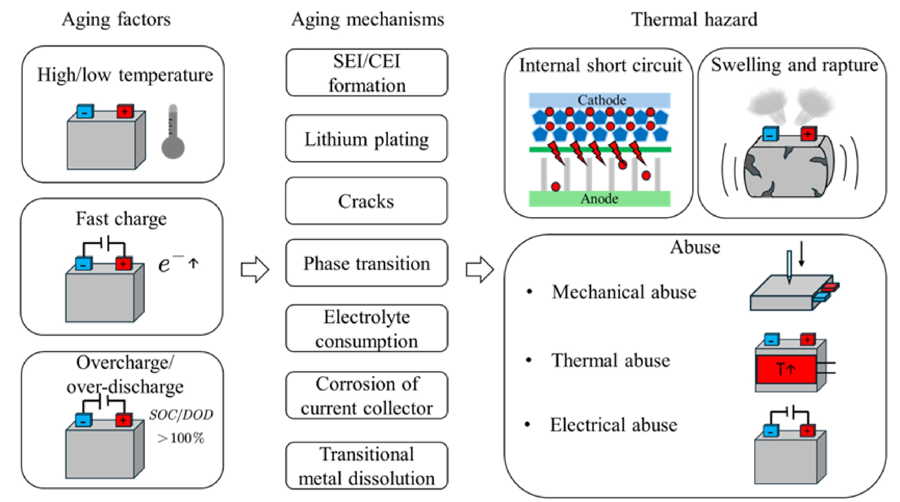
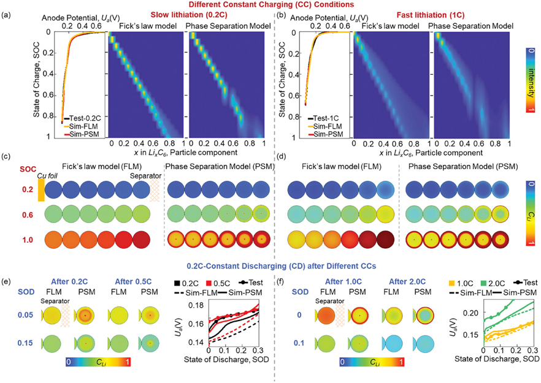

Sep 2026
I gave a talk at ASME DRIVN 2026 in Southfield, Michigan, on the multiphysics mechanism of internal short circuits in batteries.
Battery safety · Mechanics · Thermal science
Ph.D. Student in Mechanical Engineering
The Pennsylvania State University
I am a Ph.D. student in Mechanical Engineering at The Pennsylvania State University, advised by Prof. Jun Xu. I received my M.Sc. in Engineering Fluid Mechanics from Imperial College London and my B.Eng. in Building Environment and Energy from Chongqing University. My research interests center on battery safety, including internal short circuits, aging, and thermal runaway under mechanical and thermal abuse.
I study how batteries fail under mechanical and thermal abuse, with a focus on internal short circuits, aging, and thermal runaway.
My research combines controlled experiments, electrochemical and thermal diagnostics, physics-based modeling, and data-driven methods. I am particularly interested in translating degradation and failure mechanisms into measurable safety indicators and predictive tools.
I gave a talk at ASME DRIVN 2026 in Southfield, Michigan, on the multiphysics mechanism of internal short circuits in batteries.
I presented two talks at the 249th ECS Meeting in Seattle on physics-informed prediction of full-life-cycle thermal runaway and the mechanisms of mechanically induced internal short circuits.
I received the Best Presentation Award and the K. M. Abraham Travel Award at the 249th ECS Meeting.
I gave a talk at the 2026 FM Fire Modeling Workshop in Norwood, Massachusetts, on a physics-based inverse model for the thermal hazards of aged lithium-ion cells.
I presented two talks at the SAE WCX World Congress Experience in Detroit on aging path dependency and mechanically induced internal short circuits in lithium-ion batteries.
I gave a talk at IMECE 2025 in Memphis on electrochemo-mechanical coupling in electrode materials under electrolyte-induced interactions.
I presented my work on aging path dependency in lithium-ion battery thermal hazards at the 2025 FM Fire Modeling Workshop in Norwood, Massachusetts.
I gave a talk on aging path dependency in lithium-ion battery thermal hazards at the 14th U.S. National Congress on Computational Mechanics in Boston.
Selected work is listed below. For a complete and up-to-date record, see Google Scholar.








Find my current publications and research record through the profiles below.